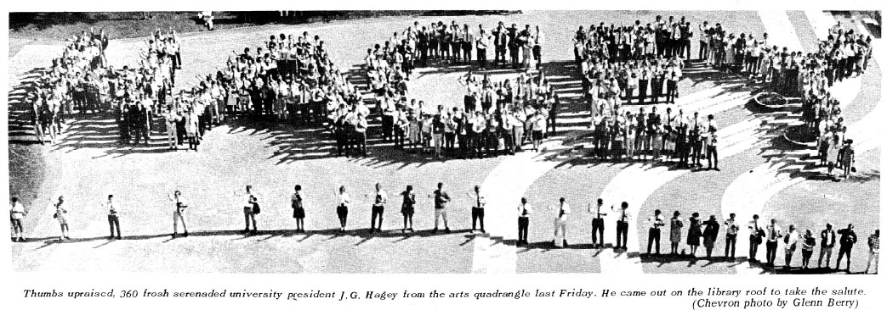

History & Traditions
The History of Orientation Week
The oldest recorded discussion of Orientation Week at the University of Waterloo is from the October 13, 1961 edition of The Coryphaeus, the University of Waterloo's first student newspaper. It's a simple article that welcomes freshman engineers to the school and the Engineering Society. It also gives thanks to Dave Smith, chairman of the Initiation Committee (Orientation used to be called initiation) and announces the Initiation Dance as part of WA-WA-WEE '61 (The old name of Warrior Weekends).
The September 27, 1963 edition of The Coryphaeus gives even more details on 'initiation' with an article discussing the school-wide scavenger hunt (apparently they acquired things like wagons, tractors, hay bales, snow fences and pictures of someone named Brigitte Bardot), a game to measure the length of a city block with hotdogs, a challenge to make a line of pennies stretching from Kitchener City Hall to Waterloo City Hall (which is apparently approximately 140,000 pennies), the (seemingly) annual 'Froshman Hop' dance, and some unknown event called the 'Hootenanny'. Each faculty organized their own Initiation program and worked with the Orientation Committee, which ensured the individual programs worked across the school.
In '64, '65, and 66 even more traditions had started to form. First year students from Arts, Science and Engineering (the only faculties at Waterloo at the time) were all awarded 'beanies' or caps at the beginning of (the now called) Orientation and the cheer of 'I'm a dirty rotten dead horse and I stink!' was used throughout the week, accompanied by students falling to the ground, laying on their back and sticking their arms and legs in the air. The Frosh Queen competition, in which 'Freshettes', or female first-year students, competed to be elected to the position complete with sash and crown, became a major event. The penny-drive also became Slave Day, where first-year students would be sold to members of the community to help them with whatever they choose, or for charity purposes.
In 1967, Stewart Saxe, a political science student and head of the Orientation Committee, re-imagined the entire week and introduced the big-brother concept. All first year students (there were only 2,200 in 1967, a third of the 7,000+ we expect this year) were divided into groups of ten which were overseen by archons, a single upper-year student leader, which stayed with the group the entire week. This year continued the method of each society running their initiation programs, and the orientation committee overseeing the entire thing.
1967 was also the first year that an aerial photo from Orientation Week was published. The 360 strong group spelled 'Hagey' across the Arts quad to salute then-president J. G. Hagey (the same Hagey that Hagey Hall is named after).
It was during the late 1960's that the bulk of Orientation Week was moved to the control of the Federation of Students (FedS). While the student societies still planned and ran programming for their specific faculty, many of the larger events would be planned by FedS. It's from this point throughout the 1970's that FedS took the Orientation Week of the 1960's and made it into a month long Orientation program with varied social or educational events each day from the start of September to the end. This included many high-profile concerts such as Meatloaf, Gordon Lightfoot and Ike and Tina Turner, as well as speeches from major political figures, cabinet ministers, MPPs and radical leaders.
While the much expanded programming offered more choices for incoming students, it was during this time that student apathy and low attendance began to take its toll. Concerts lost money (the Ike and Tina Turner concert lost $6,000 in 1972, which is over $30,000 today accounting for inflation), speeches went unattended and acts cancelled or simply didn't show. Reviews of the Orientation program varied wildly from condemnation to enthusiastic.
It was during this time that the Engineering Orientation program moved away from the Slave Day charity, and began running the Bus Push charity (which has continued annually since then). 1969 also saw the Engineering Stag event of Orientation Week, which was little more than a drunken strip-tease for first-year students.
It wasn't until 1978, when the LLBO took dispute with the University's 'beer tents' that programming needed to be reduced and concerts rethought. The LLBO refused to license the outdoor tents that were part of Orientation Week in years past, reducing the amount of money that the Orientation program had to use, preventing headline concert acts and major guests.
Then began the dark years (or the years where written records become spotty). It's expected that Orientation Week continued this way for the 1980's and early 1990's. Student societies continued running programming for their faculties, and the Federation of Students continued running the overall program. It was during an unknown Orientation Week during the 1980's that the Education Committee was founded, and that the engineering hardhats became a major symbol. These have stayed as key components of Engineering Orientation Week since then. The oldest record of the Education Committee is an Orientation Week video from 1988, and hardhats could be over a decade older than that.
At the end of the dark years, Engineering Orientation Week was a tight, multi-day program packed with events. Incoming students would go through a program similar to the program we have now, but that had very distinct differences. In 1993 a Waterloo Orientation Manual was produced and distributed to the groups running the faculty programming and soon after a major part of Orientation Week today was founded; the Federation Orientation Committee (FOC). The goal with FOC was to have better collaboration between the independent groups running various Orientation Week programming and the Federation of Students, allowing a more efficient Orientation Week overall. This started the process of Orientation Week becoming more regulated and controlled, something that would take the unorganized month-long Orientation programs of the late '70s and '80s, to the smaller, week-long programs of the '90s. By 1996, a schedule that resembles the modern day Engineering Orientation Week began to emerge: Aerial photos were taken (these can all be seen in the POETS lounge), they earned their hardhats, and they all met the Dean. However, they also competed in chariot races, paraded through town and had organized off-campus parties, events long since banned or modified.
It was during 1997 and 1998 that a new program started to address major concerns highlighted in a Orientation Student Survey conducted in 1994 and 1995. This survey concluded that there was a dangerous undercurrent of behaviour across all Orientation programs. From discriminatory chanting to exclusive programming and a dependence on drinking, it was seen that there was a fundamental problem with Orientation Week; the leaders themselves. There was no formalized Orientation Leader training program for leaders to go through, and there were few checks and balances on the actions of these leaders too. People simply ran Orientation Week like it had been run for the year they went through it and every year before that.
It was because of this that the Provost's Advisory Committee on Orientation (PACO) was founded, and PACO training was implemented in 1998. This training, mandatory for all Orientation leaders, covered things like drinking and drugs, inclusivity, and non-discrimination. While some students cried out that this was gutting the Orientation Week they knew and loved, it ultimately led to the modern Orientation Week we have now, which many believe to be better than ever before.
With the double cohort of 2003, a large percentage of students were now entering university at age 18; younger than the legal drinking age. This became a problem as many planned event during Orientation Week were 'wet' events where alcohol was served. A controlled environment was implemented, with 'beer gardens' allowed at certain events and each organizing group allowed to have a single 'wet' event for their faculty or residence.
By 2004, PACO was dissolved and we were left with Orientation Leader Training, the modern version of PACO leader training. 2004 was also the last year that Orientation Week officially included alcohol with a beer garden at the Saturday night Toga party. Once Orientation Week 2004 closed, alcohol wouldn't be part of the week again.
In 2011, Orientation Week is 50 years old, involves over 6,000 first-year students, 1,000 upper year students, has a budget in the hundreds of thousands and the support of countless sponsors and contributors. While it may be completely different from the Initiation of 1961, Orientation Week 2011 has built upon the past decades; all of the conflicts and problems, changes, successes and failures have been rolled into the week.
While it may not be perfect, it is a continuation of a tradition started soon after the University of Waterloo was founded, and it represents the unconventional history and future of this school.
Orientation Week Traditions
Engineering Orientation Week is built upon many traditions that have evolved in the past decades. Some of these are simple and may seem trivial, and some are significant portions of the week. Below are a few of the major traditions observed during Orientation Week, and their origins.
The Education Committee: The Education Committee was founded in the 1980's and oversees most of Orientation Week. They are responsible for setting up, running and presiding over most events during the week. Most of the students on the Education Committee have earned the right to be part of it through various means. Due to the shear work put into the week on their part, they are deserving of respect.
Hardhats: Hardhats were first given out sometime in the mid to late 1970's. It replaced the old 'beanies' which were given to all first-year students across campus. There are eight unique Orientation Week specific hardhats, and three hardhats reserved for other groups throughout the year. See the Hardhats section of this site for more information about them all. You will earn your hardhat during the first day of Engineering Orientation Week.
The Tool: The Tool is the Engineering Society's mascot. It is a 60" chrome-plate Ridgid pipe wrench that was forged in 1967 in Elyria, Ohio, USA before being donated to the young EngSoc. It quickly grew in popularity (at this school and others) until it had gathered a cultish following. Today, the Tool is celebrating 44 years as the mascot of EngSoc and the popularity of it hasn't waned. The Tool is introduced during Orientation Week at the Meet the Tool event.
The legends of the Tool and its mysterious guardians, the Toolbearers are many and convoluted. You can find a more complete description of everything in The Book (which will be given to you during Orientation Week).
Aerial Photo: Aerial photos started being taken in 1967, and there is a history of these photos posted on the wall of POETS extending back into the 1980's. Every year a new photo is taken with all the first-year students and leaders of that Orientation Week, and will be posted on the 'active classes' section on the POETS wall (these 5 photos are lower on the wall and much easier seen, before being 'retired' to the graduate section).
Your aerial photo will be taken on the first day of Engineering Orientation Week in the afternoon, and will be posted in POETS sometime during your first fall term.
Week saying/song: Every year there seems to be some catch-phrase or pop-song that tickles the fancy of FOC and the leaders. This gets engrained in the spirit of the week, and becomes a recurring theme and joke between the leaders. Pay attention to some of the interactions between leaders and you might catch on to what this year's special saying or song is. Previous years have been 'Ranch!' (as in the ranch tooth from the Wendy's commercials), 'Sexy Back' by Justin Timberlake and there was one week where the Education Committee decided to talk like pirates.
A Very Condensed History of the University of Waterloo
"Why," a stranger once asked, "would anyone name a university after a great defeat?"
The year was 1957. John Diefenbaker had been prime minister less than a month. Sputnik 1 hadn't even been launched. The Milwaukee Braves were leading the National League. And on July 3, the Waterloo College's new Associate Faculties held its first classes in engineering.
Headed by Gerry Hagey and his colleagues, including Ira Needles, Doug Wright and Ralph Stanton (mathematician, and wearer of pink ties), the Associate Faculties were created to provide the technical university training that local business leaders thought K-W needed. A co-operative system of education was designed to give practical experience. It was the first co-op program in Canada, and other universities looked down their noses at the very idea.
What is now the Waterloo campus was at that time a stretch of farm fields well outside the city of Waterloo. The earliest students, "a strange, strange crew", took their classes in portables next to the two brick buildings of Waterloo College, what is now Wilfred Laurier. Under the tin roofs, the air grew so hot that in August they were listening to lectures in their underwear. Then in October they were off to work-term jobs, and a second group of students took their place in the classroom.
In 1958 construction began for an academic building on the newly purchased site north-west of the original campus – later named Engineering 1, now Douglas Wright Engineering. The "faculty of science and engineering" was showing signs of overpowering the college to which it was still attached. Negotiations degenerated into hostilities, and eventually a complete break. In 1959, the provincial government established three universities: Waterloo Lutheran University to continue the old college, the University of Waterloo to continue the Associate Faculties, and the University of St. Jerome's College from Kitchener. St. Jerome's and Waterloo Lutheran were both expected to federate with the new Waterloo, and St. Jerome's promptly did. But Waterloo Lutheran remained independent and Waterloo had to build a faculty of arts in a hurry. Within weeks the new faculty was created and arts students joined the students of science and engineering.
Mud was on every side as contractors continued to turn flat farmland into a rolling campus. An original plan to put up one building a year accelerated: in 1966, seven buildings opened. The Dana Porter Library, named after the politician and jurist who became Waterloo's first chancellor, had three stories, then was built up to seven floors, then ten. Three more church colleges joined the university. The world's first mathematics faculty was created. Co-op was introduced to programs outside engineering. In 1967 the College of Optometry of Ontario moved to Waterloo from Toronto and affiliated with the university. A physical education program was established, grew, changed, and eventually became a faculty of applied health sciences. A faculty of environmental studies was created two decades before the general public was mounting the environmentalist bandwagon.
The raucous enthusiasm of the early years (engineers who painted "Beer" on the city water tower got national publicity for Waterloo) gave way to the social consciousness and "radicalism" of the late sixties. Sit-ins took place at the bookstore, the library, and the president's office. A new provincial Act in 1972 gave students a voice on the board of governors and the senate, recognition unprecedented in Canada.
Also in 1975, students celebrated the first and only time the Warriors have won a national championship in Waterloo's chosen sport, basketball. Of course, other championships have come to a fair number of Athena (Women) and Warrior (Men) teams. But Waterloo's real achievement in athletics was the Campus Recreation program which gave thousands of students a chance to forget their cares with a game of softball, late-night broomball, or squash. Social life, centre on off-campus pubs in the early days, moved back to campus with the opening of the Bombshelter and then Federation Hall. Then, as now, there are still grumbles that coming to Waterloo meant putting your life on hold, commuting to Toronto on weekends, and packing for a work term the moment you'd settled into the school routine.
While Waterloo was becoming known as a power house in computer sciences, other voices responded: don't forget Waterloo's work in the traditional pure sciences, in clinical psychology, in "public history". Don't forget a dance program formally linked to the National Ballet School, a PhD program in philosophy, and pure mathematics. New fields of practical study were opened as well: a school of accountancy, actuarial science, a Rhetoric and Professional Writing program, and a school of architecture.
In the 1980's Waterloo responded to government demands and social changes with new safety programs, new day care services and much attention to the status of women on campus. Sexual harassment, grievance policies and the balance of the sexes among professors were constantly in the news. Pay equity, employment equity, "goals" for the hiring of women professors, and special programs to entice high school girls into the study of math, science and engineering were all introduced at this time.
The mid-90's saw further changes. As the concerns of students, staff and faculty with the state of frosh week came to a head, the Provost's Advisory Committee on Orientation was formed. Consisting of representatives from all faculties, including student representatives, the committee developed a report outlining the purpose, principles and best practices of Orientation Week. This, as with so many changes in Waterloo's history, drew controversy, as mandatory leader training was introduced and many of the traditional frosh week events were changed or eliminated entirely from the schedule.
Continuing into the new millennium, Waterloo continued to push ahead to meet the challenges of a double class of incoming students. Renovations and new developments abounded to create the space needed. At the same time, the research and development park, first dreamed about in the 1970's, began serious development.
A university named after a defeat it may be, but the University of Waterloo is an institution that's triumphed in its 54-year life and continues to meet head on the challenges of tomorrow.